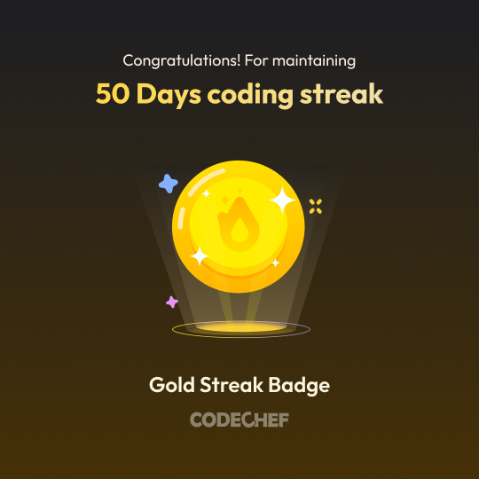

01
THINK · TRAIN · EVALUATE
The model lab
Turn data into dependable predictions, language workflows, and vision systems.
AI · MACHINE LEARNING · ENGINEERING
AI/ML Engineer
I build practical AI systems that connect machine learning research with useful, production-minded software — from NLP and retrieval-augmented generation to computer vision and cybersecurity.

01 / A LITTLE ABOUT ME
I’m an AI/ML engineer from Thane, Maharashtra, and a 2026 B.E. graduate in Artificial Intelligence & Data Science from Datta Meghe College of Engineering, University of Mumbai. I enjoy taking an idea from a dataset or research question all the way to an application someone can use.
My work spans machine learning, NLP, computer vision, LLM applications, retrieval-augmented generation, cybersecurity, and full-stack development. At Ross Warner HR Solutions, I contributed to NLP-enabled recruitment workflows; my final-year project explored real-time DDoS detection, classification, and mitigation.
Outside my technical work, football has taught me how to lead, stay disciplined, and contribute to a team. I bring that same mindset to collaborative engineering and fast-moving projects.
THE BUILD SYSTEM / 01—06
A working map of the tools I reach for—not just a list of logos.
THINK · TRAIN · EVALUATE
Turn data into dependable predictions, language workflows, and vision systems.
REASON · ANALYZE · SCRIPT
The right language for the task, from analysis to algorithms.
CONNECT THE INTELLIGENCE
Bring models, retrieval, and useful interfaces together.
MAKE IT USEFUL
Shape smooth experiences backed by reliable, well-structured data.
PACKAGE · DEPLOY · ITERATE
Move a project from a working machine toward somewhere people can use it.
SEE THE WHOLE PICTURE
Make patterns clearer and findings easier to act on.
02 / WHERE I’VE CONTRIBUTED
Completed an AICTE-approved virtual internship focused on machine learning techniques and convolutional neural networks.
Applied Python and machine-learning methods to predictive modelling and data analysis.
Explored machine-learning solutions on Microsoft Azure, gaining practical exposure to cloud-based AI workflows.
03 / SELECTED WORK
A mix of applied AI, full-stack engineering, research, and data exploration.

HACKATHON WINNER · JAN 2026
A multimodal last-mile navigation assistant built to make hard-to-find local destinations easier to reach when map directions fall short.
Team lead · 3rd place among 40+ teams at Techvanza ’26
See the achievementFINAL-YEAR PROJECT · CYBERSECURITY
An AI/ML-based intrusion-detection system designed to monitor network traffic, classify multiple attack types, detect anomalous activity, and support automated mitigation workflows.
Research paper published in the International Journal of Creative Research Thoughts (IJCRT).
Open research paperLLM APPLICATION · RAG
A full-stack, multi-persona document question-answering platform. It ingests PDFs dynamically, creates Hugging Face embeddings, searches with FAISS, and serves Llama 3 responses through Groq inference.

COMPUTER VISION · DEEP LEARNING
A CNN-powered plant disease classification project paired with a web interface for interactive predictions.
Explore PlantLensAI on GitHubMACHINE LEARNING
A classification workflow for identifying potentially fraudulent transactions, with data preparation and evaluation using precision, recall, F1, and ROC-AUC.
 View project
View project
DATA SCIENCE · R
Built and visualized network graphs, explored centrality and hub scores, and used community detection to reveal relationships and influential nodes.
 View project
View project
MORE BUILDS
Iris species classification with scikit-learn, a React Tic-Tac-Toe game, and an Azure computer-vision project.
04 / MILESTONES
Led the RapidReach team to a podium finish among 40+ teams with a multimodal solution for last-mile navigation.

Finalist with Beyond Horizon, recognized at CSI CATT 25–26.
View certificate image
Recognized for performance in the college football tournament.
Finished as runners-up in the inter-collegiate football tournament.
Helped lead and organize the college football event.
Built consistency through problem-solving and coding practice.

Trained with the club and represented college in inter-university football.
View university certificateParticipated in Smart India Hackathon, Logithon, and Quasar.
05 / EDUCATION
BACHELOR OF ENGINEERING · MAY 2026
Datta Meghe College of Engineering · University of Mumbai
HIGHER SECONDARY · 2022
People’s Education Society, Thane
SECONDARY · 2020
New Horizon Public School, Navi Mumbai
06 / CREDENTIALS
Open a certificate in your browser or download the original PDF.
UNIVERSITY OF MICHIGAN · COURSERA
Practical AI, data interpretation, automation, and decision-making · Aug 2026.
Verify online ↗STANFORD UNIVERSITY · DEEPLEARNING.AI
Supervised learning, advanced algorithms, clustering, recommenders, and reinforcement learning · Sep 2024.
Verify online ↗LINKEDIN LEARNING
Containerization fundamentals and Docker products · Aug 2026.
Verify online ↗DUOLINGO ENGLISH TEST
Overall score 135/160 · Jul 2026.
MICROSOFT · COURSERA
Applied computer vision with Azure · May 2026.
Verify online ↗RESEARCH · IJCRT
Certificate for the final-year DDoS detection, classification, and mitigation research.
Open paper folder ↗07 / LET’S CONNECT
I’m open to conversations about AI/ML engineering, applied research, and building useful products.